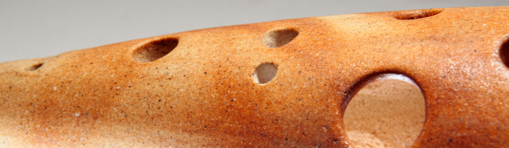

"Una ocarina de una sola cámara tiene un rango limitado, por lo que no se pueden tocar muchas melodías con ella. Deberías elegir una ocarina de al menos 12 agujeros. Una ocarina afinada en Do (AC) es una buena opción para empezar." ¿Eso es lo que piensas? ¿De verdad es la mejor opción?
Puedes obtener el rango completo de una ocarina de 12 agujeros con solo 11 agujeros.
La forma moderna de la ocarina se estableció en Italia en el siglo XIX. El modelo clásico tiene 10 agujeros y un rango que va desde Do hasta Fa de la octava superior. Al combinar ocarinas afinadas en Do y Sol, en diferentes tonalidades, los músicos pueden cubrir un rango más amplio de notas al tocar en conjunto.
Más tarde, en Japón, durante el siglo XX, se introdujo la ocarina de 12 agujeros. Se añadieron dos agujeros pequeños adicionales que normalmente se dejan abiertos y que, al taparlos, permiten ampliar el rango hacia las notas más graves: Si y La. Hoy en día, este diseño de 12 agujeros se ha vuelto muy popular en todo el mundo.

Mi ocarina no tiene uno de los agujeros pequeños adicionales, pero su rango llega hasta el Sol agudo. Es una ocarina de 11 agujeros que puede tocar desde Do hasta Sol de la octava superior, además de Si grave gracias a un agujero pequeño adicional.
Esto permite mover los dedos con mayor facilidad, incluso al tocar melodías rápidas. Puedes tocar el Fa agudo, que normalmente se obtiene dejando un agujero abierto en una ocarina convencional de 12 agujeros, sin levantar el dedo meñique de la mano izquierda. Esto facilita el cambio entre Mi y Fa agudos y también permite sujetar la ocarina con mayor firmeza. Por supuesto, puedes obtener el Sol agudo levantando todos los dedos de los agujeros.
Doble agujero en la ocarina.
El agujero para el dedo meñique de la mano derecha tiene un diseño de doble agujero, similar al de las flautas dulces, que permite tocar la nota Do sostenido. Esta característica se encuentra en algunas ocarinas europeas, pero rara vez se utiliza en las ocarinas japonesas, ya que se puede conseguir el mismo resultado utilizando un agujero adicional pequeño. En una ocarina común de 12 agujeros afinada en Do, puedes tocar el mismo Do sostenido tapando el agujero adicional pequeño de la mano derecha y dejando abierto el agujero del dedo meñique derecho. Esto funciona bien para melodías lentas. Sin embargo, si quieres tocar pasajes rápidos y rítmicos, el doble agujero para el dedo meñique derecho facilita mucho la digitación y permite mover los dedos con mayor fluidez.

Elige entre una variedad de tonalidades y encuentra la que realmente necesitas.
Además de las tonalidades Do, Fa y Sol, también están disponibles ocarinas afinadas en Lab, La, Sib y Mib. Disfruta de la libertad que ofrece una ocarina de una sola cámara, más pequeña y ligera, sin necesidad de cambiar de cámara mientras tocas.
Si te interesa tocar con una ocarina melodías tradicionalmente interpretadas con la gaita irlandesa o el tin whistle, o tocar junto a músicos que utilizan estos instrumentos, ¡me encantaría saber de ti! Estaré encantado de fabricar una ocarina personalizada afinada en Re para ti. Será un instrumento de una sola cámara, con un rango que va desde Re hasta La agudo, e incluirá un agujero adicional pequeño para tocar Do sostenido. Su diseño también facilitará la ejecución de melodías rápidas y rítmicas.
Todo comenzó cuando escuché una interpretación de Carlos Núñez , el reconocido intérprete de gaita gallega. Hasta entonces, no había sentido demasiado interés por la ocarina, pero escuchar su interpretación cambió por completo mi percepción de este instrumento.
Las ocarinas que toca están hechas por Manuel Barreiro, también conocido como "Paparolo", un escultor español. Lo conocí por primera vez alrededor de 2014 y, a lo largo de los años, me ha enseñado muchas cosas sobre la ocarina.
Una respuesta al soplo que te ofrece más libertad al tocar.
A menudo se dice que la ocarina es un instrumento que cualquiera puede tocar fácilmente con un soplo suave. Sin embargo, creo que dar demasiada prioridad a la facilidad de ejecución puede limitar el control de la respiración necesario para producir notas con la afinación correcta. También he cuestionado la creencia habitual de que las notas agudas deben tocarse con un flujo de aire fuerte y rápido, mientras que las notas graves requieren un soplo más suave y ligero.
Lo que más me gusta de las ocarinas de mi maestro Paparolo es su extraordinaria flexibilidad. Desde las notas más graves hasta las más agudas, permiten al intérprete una gran libertad para controlar el soplo. En lugar de imponer una única forma de tocar cada nota, el instrumento deja espacio para las decisiones y la expresión personal de cada músico. Esta es la cualidad que más deseo conservar y transmitir de las ocarinas de Paparolo.
Mi ideal es crear un instrumento que se adapte a la intención expresiva de cada intérprete. Debe permitir tocar notas agudas y delicadas con un soplo libre y fluido, y también responder a un soplo firme y potente cuando el intérprete quiera que las notas graves suenen con fuerza.
Conducto de aire similar al de un whistle
La salida del conducto de aire tiene una forma muy similar a la de un whistle. Este diseño es algo que heredé de Paparolo y que he seguido perfeccionando mediante mis propios experimentos. Conseguir que el flujo de aire y el borde estén perfectamente ajustados es la parte del proceso de fabricación de mis ocarinas que requiere más tiempo y cuidado.

Para acompañarte durante muchos años.
Mis ocarinas son duraderas y fáciles de mantener gracias a su cocción a alta temperatura. Los colores y las texturas se crean íntegramente mediante el esmaltado y la cocción, sin utilizar pinturas ni recubrimientos adicionales.

Puedes cuidarlas de la misma manera que la vajilla.